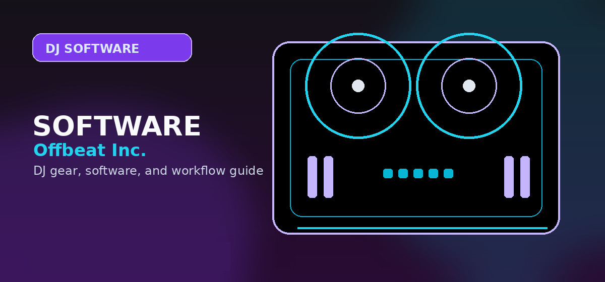

Traktor Pro 3 Review 2026: Is It Still the Best DJ Software for Live Remixing?
Comprehensive guide to traktor pro 3 review DJ software features price 2026 comparison with practical recommendations and current buying notes — updated 2026.

Disclosure: This page uses affiliate links. We may earn a commission at no extra cost to you. Full disclosure →
In 2026, the DJ software landscape is more competitive than ever, but Native Instruments' Traktor Pro 3 continues to hold a unique position. While many platforms have pivoted toward subscription-based models and streamlined, "plug-and-play" interfaces, Traktor remains the powerhouse choice for the "performer" DJ. It is designed for those who view the DJ booth as a production studio, offering unparalleled control over stems, effects, and routing. Whether you are a techno purist or a hybrid performer blending live elements with pre-recorded tracks, Traktor Pro 3 provides the depth required for professional-grade manipulation. In this review, we analyze its 2026 performance, current pricing, and how it stacks up against industry titans like rekordbox and Serato DJ Pro to help you decide if it's the right engine for your setup.
Advanced Stem Manipulation and Performance Features
The crown jewel of Traktor Pro 3 in 2026 remains its industry-leading Stems integration. While competitors have added stem separation, Traktor’s workflow is built around it. The ability to isolate vocals, drums, and melodies in real-time allows DJs to create live mashups and "on-the-fly" remixes that feel organic rather than programmed. Combined with the Mixer FX—which provides intuitive, single-knob filters and noise tools—the software transforms a standard mix into a live performance. The stability of the software has also seen significant improvements, with low-latency monitoring that makes it a reliable choice for high-pressure club environments. For the DJ who wants to move beyond simple beat-matching into true sonic reconstruction, these features are indispensable.
Hardware Ecosystem and MIDI Flexibility
Traktor Pro 3 is most potent when paired with Native Instruments hardware, such as the Kontrol S4 or the Z1 mixer. The integration is seamless, with deep mapping that ensures every knob and fader performs exactly as expected. However, Traktor’s real strength in 2026 is its open-ended MIDI mapping. Unlike some competitors that lock you into a rigid ecosystem, Traktor allows you to map almost any external controller or Ableton Push-style grid to its functions. This flexibility makes it the go-to software for hybrid artists who integrate synthesizers and drum machines into their sets. While it lacks the "club standard" ubiquity of Pioneer hardware, its versatility in the studio and at private events is unmatched.
Pricing, Value, and the Subscription Debate
One of the most compelling reasons to choose Traktor Pro 3 in 2026 is its pricing model. While Serato and rekordbox have pushed users toward monthly subscriptions for advanced features, Traktor Pro 3 typically remains a one-time purchase, priced around $129. This "buy it once, own it forever" approach is a significant relief for freelance DJs and hobbyists facing subscription fatigue. When you factor in the lifetime updates and the sheer amount of built-in effects and tools, the value proposition is immense. You aren't just paying for a player; you are investing in a professional toolset that doesn't require a monthly fee to keep your library accessible.
Traktor Pro 3 vs. The Competition: 2026 Comparison
When comparing Traktor to the "Big Three," the choice comes down to your specific DJ style. Rekordbox is the undisputed king of the club, essential for anyone playing on CDJs. Serato remains the gold standard for scratch DJs and hip-hop artists due to its superior DVS (Digital Vinyl System) response. Traktor, however, wins on creativity and technical depth. It offers more sophisticated looping, a more powerful effects rack, and a superior approach to stem-based mixing. If your goal is to play the "industry standard" set, go with rekordbox; if your goal is to redefine the track while you play it, Traktor is the superior tool.
2026 DJ Software Comparison Table
| Feature | Traktor Pro 3 | rekordbox 7 | Serato DJ Pro |
|---|---|---|---|
| Pricing | ~$129 (One-time) | Freemium / Subscription | Subscription / One-time |
| Best For | Live Remixing / Techno | Club Standard / CDJs | Scratching / Hip-Hop |
| Stem Quality | Exceptional (Native) | Very Good | High |
| Hardware | NI Kontrol / Universal | Pioneer DJ (Exclusive) | Broad Third-Party |
| Learning Curve | Steep (High Depth) | Moderate | Easy / Intuitive |
| MIDI Mapping | Fully Open | Restricted | Moderate |
Pros & Cons
✅ Pros
- Stems remix feature — industry leading AI stem separation
- Most flexible MIDI mapping of any DJ software
- Deep integration with Native Instruments hardware (Kontrol S4/S2)
- Stem Deck system unique to Traktor
- Modular Remix decks for loop-based performance
❌ Cons
- $99/year subscription (or $199 one-time Traktor Pro 3)
- Less widespread club standard than Rekordbox/Serato
- Complex setup — not beginner-friendly
- Fewer hardware compatibility options vs Serato
Key Specs
Quick Verdict
Best choice for advanced performers using NI hardware — Traktor Pro 3's Stems and Remix Deck features are unmatched. If you're not invested in the NI ecosystem, Serato or Rekordbox are safer choices for club compatibility. Shop Traktor Kontrol S4 MK3 on Amazon →
Shop on Amazon
Find Traktor Pro controllers on Amazon — from S2 to S4 MK3.
Also on Plugin Boutique
Buy Traktor Pro direct — includes full activation, bundles available.
Who Should Buy This?
Traktor Pro 3 Review 2026 is the right choice if you want professional-grade quality that will last through years of regular use. It suits DJs who have moved past entry-level gear and need something that can handle club environments and regular touring.
- Ideal for: intermediate to advanced DJs upgrading from a first controller
- Not ideal for: first-time buyers on a tight budget who should start with a more forgiving entry-level option
- Best purchased from: an authorised retailer with warranty coverage
Traktor Pro 2026 Pricing & Licensing
Native Instruments has shifted its business model to accommodate both power users who prefer ownership and modern creators looking for lower entry costs. Choosing the right license depends entirely on whether you need real-time STEM separation.
- Traktor Pro 3 (Perpetual): ~$99. Best for mobile DJs who need a stable, offline-first environment without recurring costs. Note: This version does not include the advanced AI-powered Stem separation engine.
- Traktor Pro 4 (Subscription): ~$4.99/month or ~$49/year. This is the current flagship, unlocking the full potential of Traktor’s new engine, including high-fidelity real-time STEMs.
- Hardware Bundles: If you purchase a Traktor Kontrol S4 Mk3 or S2 Mk3, you receive a perpetual upgrade path to Traktor Pro 4, making it the most cost-effective way to enter the ecosystem.
NI Hardware Compatibility Matrix
| Controller | Stems Decks | Remix Decks | 4-Deck | Mixer FX |
|---|---|---|---|---|
| Traktor Kontrol S4 Mk3 | Yes | Yes | Yes | Yes |
| Traktor Kontrol S2 Mk3 | Yes | Yes | No | Yes |
| Traktor Kontrol F1 | No | Yes | N/A | Partial |
| Non-NI Controllers | Depends | No | Depends | Via MIDI |
Deep Dive: The Stems Revolution
In 2026, Traktor Pro 4's implementation of Stems has moved beyond a gimmick to a standard performance requirement. Unlike competitors that rely on cloud-based processing, Traktor’s engine allows for local, low-latency isolation of Drums, Bass, Vocals, and Melody.
For house and techno DJs, this means you can pull a vocal loop from a track while maintaining the integrity of the percussion. The integration with the S4 Mk3's displays is seamless, allowing you to visualize stem volume and filter settings directly on the hardware jog wheels. If you are a producer-DJ, the ability to map these stems to individual mixer channels provides a studio-grade mixing experience live on stage.
Recommendation for 2026 Users
If you already own an S4 Mk3, the upgrade to the Traktor Pro 4 subscription is a "no-brainer" for the Stems functionality alone. However, if you are a traditional DJ who primarily plays full-length tracks, the perpetual Traktor Pro 3 license remains a robust, one-time investment that won't leave you tied to a monthly bill.
Frequently Asked Questions
Is Traktor Pro 3 worth buying in 2026?
Yes for DJs who prioritize effects routing and stem separation. Traktor Pro 3 + ($99 launch, Stems edition $199) includes Native Instruments' proprietary Stems format for 4-channel track isolation (kick, bass, melody, vocals) — unique among major DJ software. Its Remix Decks and complex FX chains appeal to producers-turned-DJs. Serato is better for straightforward club DJing.
What hardware works with Traktor Pro 3?
Native Instruments' own hardware — Traktor Kontrol S4 MK3 ($699), S2 MK3 ($299), and Z2 ($499) — integrates deepest with Traktor. Third-party hardware works via MIDI mapping: Pioneer DDJ, Denon MC, and Hercules controllers all have community-built Traktor mappings available for free on the Traktor Bible and other forums.
What are Traktor Stems and can I use them with any track?
Traktor Stems is a proprietary file format (.stem.mp4) containing 4 separate audio stems per track (bass, drums, melody, vocals). Only tracks released in Stem format (available on Beatport, Traxsource, and directly from labels) provide true multi-stem mixing. Standard MP3/FLAC tracks load normally in Traktor without stem separation. AI-based stem separation is available via third-party tools (RipX, Serato DJ Pro's Stems feature) as an alternative.
Traktor Pro 3 vs Serato DJ Pro — which is better for scratching?
Serato is better for scratch DJing. Its scratch algorithm and timecode tracking are tighter, and virtually all professional scratch DJs (DMC, Red Bull 3Style competitors) use Serato. Traktor's scratch performance is capable for smooth blends but shows latency artifacts under intense needle manipulation that Serato handles more cleanly.
Can I use my existing MP3 library with Traktor Pro 3?
Yes. Traktor Pro 3 reads MP3, AAC, FLAC, WAV, AIFF, and OGG formats. The first-time library import analyzes your music folder, reads existing iTunes/Music app playlists, and calculates BPM and key for each track. Analysis takes 15–60 seconds per track depending on CPU speed — analyze your full library overnight before your first gig.